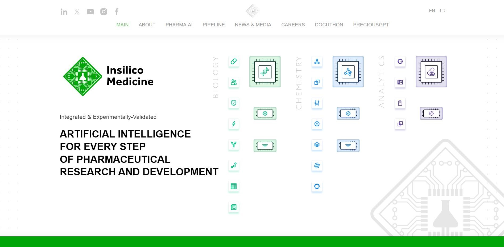

暂时搁置，要研究的内容包括：
- 英矽智能
- BioNeMo: NVIDIA 的 AIDD 框架
- Valo Health: 另一个该领域很重要的企业
别的还有待发掘。
# 简介

英矽智能的主页是 Insilico Medicine, 看起来很有趣。
OUR MISSION: Artificial Intelligence for every step of pharmaceutical research and development.
用人工智能赋能药物研发的每一个环节。
哦，所以一个问题就是药物研发分为哪几个环节，如何在各个环节中使用人工智能技术？
# Reference
- Insilico Medicine
- 从靶点到候选新药仅用 18 个月，全球首款全新靶点 “AI 原创新药” 进入二期临床 - 文汇报
- 与英伟达、OpenAI 一同入选年度 “最具创新力” 公司，英矽智能何以跻身全球 AI 制药第一梯队 - 文汇报
- MNC、Biotech、大科技公司掘金 AI 制药！中国 AI 制药进入临床试验阶段，以英矽智能为代表的 AI 制药公司能否上岸？下一步重点方向在哪？
- 为什么搞药物研发的人往往不是药学出身？什么专业最适合从事药物研发？ - 知乎